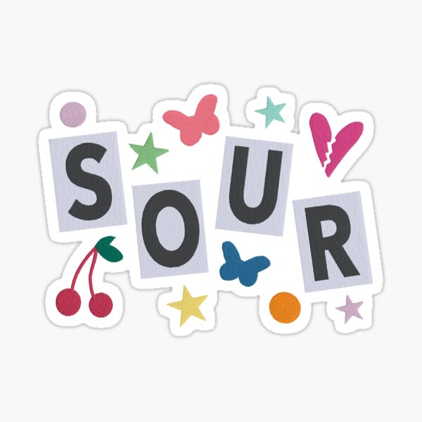
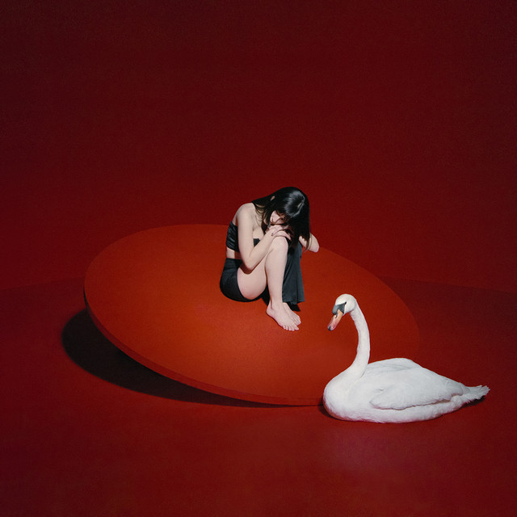

Albums (that I feel are a Masterpiece)
When it comes to music, one thing I like is the recollection of various tracks by an artist compiled into something called an "album". There's a lot of albums I feel are amazing, I love them, and I think it deserves attention such as: emails i can't send, Ashlyn, Life Support, Silence Between Songs, SOUR, GUTS, and many more. As of right now to make things simple I'll only elaborate on one.
Cinema by The Marias
I admit that when i first listen to it, I didn't like it entirely but with time, I grew to love it. Released on june 25th 2021, Cinema is the debut album of the band "The Marias". A project that combines genres/subgenres such as indie pop, indie rock, alternative pop and psychedelic soul. It consists of 13 tracks. Here the following tracklist.
| # | Tracks |
|---|---|
| 1. | Just A Feeling |
| 2. | Calling U Back |
| 3. | Hush |
| 4. | All I Really Want Is You |
| 5. | Hable con Ella |
| 6. | Little By Little |
| 7. | Heavy |
| 8. | Un Millon |
| 9. | Spin Me Around |
| 10. | The Mice Inside This Room |
| 11. | To Say Hello |
| 12. | Fog as a Bullet |
| 13. | Talk To Her |
My favorite track from the album is track #8 "Hable con Ella" which is in fact an instrumental, a beautiful piece of art that manages to capture this mysterios but soulful, elegant vibe that supposed to represent in words of the artist the film which shares the same title. One of my favorites things about albums are the art covers which represent what the whole project may sound like. With this album the vibrant dark red in contrast with the black outfit wore by the lead singer accompanied by the swan give the elegant vibe of what the album is. The prodcution is very well made and consistent and the vocals are hauntingly enchanting.
Aprecciation for Music
If you feel a deep love for music, you migth look for companions who do as well. i can guarantee you'll find apreciation for music in my previous page where I talk about why music has an established corner in my mind.
Previous PagePiano Appreciation
If you made it trhough this page, and share the love for music and records, you might enjoy the next page which talks an in depth love for clasical instrument suh as the piano and guitar.
Next Page